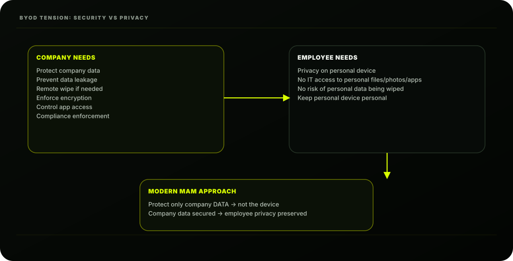

The Scene
Friday morning. Ashpak has just sent an email to all 1,000 AshScript employees explaining the new
device enrollment program.
By 10 AM, his inbox has 47 replies. Most are supportive. But three stand out:
From Rohan (Senior Developer):
"I'm not enrolling my personal MacBook in any MDM system. I have client code, personal projects,
and private files on this machine. I don't care about policy; my personal device stays personal."
From Fatima (Sales Rep):
"I understand the need for security, but I really don't want IT to be able to wipe my personal
phone. My entire life is on it. Can we find a middle ground?"
From AshScript Legal (copied to Riya and Ashpak):
"Please be advised that enrolling employee personal devices in a full MDM solution may create
data privacy obligations under applicable law. We recommend reviewing the approach for
personal devices."
Riya forwards the legal email to Ashpak with one line:
"Sort this out."
Ashpak closes his inbox, opens a blank document, and starts writing. He's been expecting this. He
knows exactly what the answer is.
MAM-only mode. Protect the data. Not the device.
The Fundamental BYOD Problem
The core tension in BYOD is this:
MDM vs MAM: Understanding the Difference
This is one of the most important conceptual distinctions in all of Intune:
wrapper around specific apps (Outlook, Teams, Edge). Company data inside those apps is
protected. Everything outside those apps; personal photos, personal email, personal files; is
completely invisible to IT.

| MDM | MAM |
|---|---|
| Mobile Device Management | Mobile Application Management |
| Manages the DEVICE | Manages the APPS (and data within them) |
| Requires device enrollment (MDM certificate installed) | NO enrollment required |
| IT controls device settings; Wi-Fi, VPN, passcode | IT controls only app behaviour; copy/paste, save, screen share |
| Can wipe ENTIRE device | Can wipe only COMPANY DATA inside managed apps |
| Can see device inventory (hardware, OS, apps) | Cannot see device details at all |
| Best for: corporate devices | Best for: BYOD personal devices |
App Protection Policies: The Heart of MAM
App Protection Policies (APP) are the mechanism that makes MAM work. They are policies applied to
specific apps that control how company data can be used within those apps.
| Control area | Examples |
|---|---|
| Data movement controls | Block copy/paste to WhatsApp • block save to personal iCloud • block Dropbox sharing • block screenshots |
| Access controls | Require PIN/biometric • require work account • block jailbroken/rooted • minimum app version |
| Selective wipe | Remove only company data from managed apps • personal data untouched |
Creating App Protection Policies
Let's build AshScript's MAM policy for iOS personal devices step by step:
Policy 1: iOS App Protection Policy (BYOD)
Basics:
Apps tab:
Data Protection tab; the core settings:
Access Requirements tab:
Conditional Launch tab; Automatic protections:
Assignments:
- Create
Policy 2: Android App Protection Policy (BYOD)
The Android policy mirrors the iOS one. Create a separate policy:
Key Android-specific consideration:
MAM Without Enrollment: The User Experience
Here's what Rohan (the developer who refused MDM) experiences when he accesses company email
on his personal MacBook or phone using MAM-only:
This is the answer Ashpak gives Rohan, Fatima, and Legal. MAM protects company data; nothing
more, nothing less.
MAM vs MDM vs MAM+MDM: The Full Comparison
Ashpak creates this table for Riya's briefing:
| Capability | MAM only | MDM (enrolled) |
|---|---|---|
| Device inventory | × No | Full visibility |
| Compliance check | × No | Full compliance |
| Push Wi-Fi/VPN | × No | Yes |
| Device wipe | × No | Yes (full wipe) |
| Selective wipe (company data) | Company data only | Company data only |
AshScript's BYOD Decision Framework
Ashpak creates a clear decision framework for every BYOD situation:
iOS User Enrollment: The Middle Ground
For employees who want to enroll their iPhone but want stronger privacy guarantees than full MDM,
Apple offers User Enrollment; a privacy-preserving MDM mode:
Enabling User Enrollment:
(Wi-Fi profiles, certificates, VPN) but need strong privacy guarantees about personal data. It's a
genuine middle ground between full MDM and MAM-only.
Selective Wipe: The Employee Leaves
This is the moment MAM-only proves its value. Fatima leaves AshScript. Her personal phone has
company Outlook, Teams, and SharePoint data. With MAM-only:
Fatima's phone is returned to purely personal use. The company's data is gone. Everyone is satisfied.
Conditional Access for MAM-Only Devices
A common concern: "If someone isn't enrolled, can Conditional Access still protect company
resources?"
Yes; but differently. Ashpak creates a Conditional Access policy that requires approved apps and
app protection policies for unmanaged devices:
Effect:
This means even Rohan on his personal MacBook must use managed apps; he can't just point a
random mail client at company Exchange. The company data is protected even without
enrollment.
AshScript's Final BYOD Strategy
| Scenario | Solution | Protection level |
|---|---|---|
| Personal Android (willing) | Android Work Profile MDM | Strong; full work profile management; personal side private |
| Personal Android (not willing to MDM) | MAM-only App Protection Policy | Good; app-level data protection, no device visibility |
| Personal iPhone (privacy concerned) | iOS User Enrollment | Strong; privacy-first MDM, work data separate |
| Personal iPhone (no enrollment) | MAM-only App Protection | Good; app-level only |
| Personal Mac (willing) | Company Portal macOS enrollment | Strong; full macOS management |
| Personal Mac (Rohan; not willing) | MAM-only for Office apps + CA enforcement | Basic; Office apps protected, CA enforces approved apps only |
AshScript's Current State After Lesson 3.6
| Concept | Remember This |
|---|---|
| MDM | Manages the device; requires enrollment |
| MAM | Manages apps and data; no enrollment needed |
| App Protection Policy | Controls company data inside managed apps |
| MAM-only | Personal device stays outside Intune device management |
| Conditional Launch | Blocks access when device/app conditions fail |
| Selective wipe | Removes company data, not personal data |